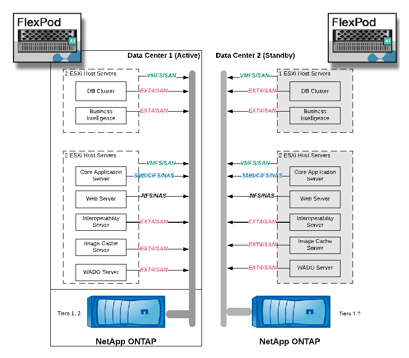

Architecture
Contributors
 Download PDF of this page
Download PDF of this page
The FlexPod architecture is designed to provide high availability if a component or a link fails in your entire compute, network, and storage stack. Multiple network paths for client access and storage access provide load balancing and optimal resource utilization.
The following figure illustrates the 16Gb FC/40Gb Ethernet (40GbE) topology for the medical imaging system solution deployment.
Storage architecture
Use the storage architecture guidelines in this section to configure your storage infrastructure for an enterprise medical imaging system.
Storage tiers
A typical enterprise medical imaging environment consists of several different storage tiers. Each tier has specific performance and storage protocol requirements. NetApp storage supports various RAID technologies; more information can be found here. Here is how NetApp AFF storage systems serve the needs of different storage tiers for the imaging system:
-
Performance Storage (tier 1). This tier offers high performance and high redundancy for databases, OS drives, VMware Virtual Machine File System (VMFS) datastores, and so on. Block I/O moves over fiber to a shared storage array of SSD, as is configured in ONTAP. The minimum latency is 1ms to 3ms, with an occasional peak of 5ms. This storage tier is typically used for short- term storage cache, typically 6 to 12 months of image storage for fast access to online DICOM images. This tier offers high performance and high redundancy for image caches, database backup, and so on. NetApp all-flash arrays provide <1ms latency at a sustained bandwidth, which is far lower than the service times that are expected by a typical enterprise medical imaging environment. NetApp ONTAP supports both RAID-TEC (triple parity RAID to sustain three disk failures) and RAID DP (double-parity RAID to sustain two disk failures).
-
Archive storage (tier 2). This tier is used for typical cost-optimized file access, RAID 5 or RAID 6 storage for larger volumes, and long-term lower-cost/performance archiving. NetApp ONTAP supports both RAID-TEC (triple parity RAID to sustain three disk failures) and RAID DP (double-parity RAID to sustain two disk failures). NetApp FAS in FlexPod enables imaging application I/O over NFS/SMB to a SAS disk array. NetApp FAS systems provide ~10ms latency at sustained bandwidth, which is far lower than the service times that are expected for storage tier 2 in an enterprise medical imaging system environment.
Cloud-based archiving in a hybrid-cloud environment can be used for archiving to a public cloud storage provider using S3 or similar protocols. NetApp SnapMirror technology enables replication of imaging data from all-flash or FAS arrays to slower disk-based storage arrays or to Cloud Volumes ONTAP for AWS, Azure, or Google Cloud.
NetApp SnapMirror provides industry leading data replication capabilities that help protect your medical imaging system with unified data replication. Simplify data-protection management across the data fabric with cross-platform replication—from flash to disk to cloud:
-
Transport data seamlessly and efficiently between NetApp storage systems to support both backup and disaster recovery with the same target volume and I/O stream.
-
Failover to any secondary volume. Recover from any point-in-time Snapshot on the secondary storage.
-
Safeguard your most critical workloads with available zero-data–loss synchronous replication (RPO=0).
-
Cut network traffic. Shrink your storage footprint through efficient operations.
-
Reduce network traffic by transporting only changed data blocks.
-
Preserve storage-efficiency benefits on the primary storage during transport—including deduplication, compression, and compaction.
-
Deliver additional inline efficiencies with network compression.
More information can be found here.
The table below lists each tier that a typical medical imaging system requires for specific latency and the throughput performance characteristics.
| Storage tier | Requirements | NetApp recommendation |
|---|---|---|
1 |
1–5ms latency |
AFF with <1ms latency |
2 |
On premises archive |
FAS with up to 30ms latency |
Archive to cloud |
SnapMirror replication to Cloud Volumes ONTAP or backup archiving with NetApp StorageGRID software |
Storage network connectivity
FC fabric
-
The FC fabric is for host OS I/O from compute to storage.
-
Two FC fabrics (Fabric A and Fabric B) are connected to Cisco UCS Fabric A and UCS Fabric B, respectively.
-
A storage virtual machine (SVM) with two FC logical interfaces (LIFs) is on each controller node. On each node, one LIF is connected to Fabric A and the other is connected to Fabric B.
-
16Gbps FC end-to-end connectivity is through Cisco MDS switches. A single initiator, multiple target ports, and zoning are all configured.
-
FC SAN boot is used to create fully stateless computing. Servers are booted from LUNs in the boot volume that is hosted on the AFF storage cluster.
IP network for storage access over iSCSI, NFS, and SMB/CIFS
-
Two iSCSI LIFs are in the SVM on each controller node. On each node, one LIF is connected to Fabric A and the second is connected to Fabric B.
-
Two NAS data LIFs are in the SVM on each controller node. On each node, one LIF is connected to Fabric A and the second is connected to Fabric B.
-
Storage port interface groups (virtual port channel [vPC]) for 10Gbps link to switch N9k-A and for 10Gbps link to switch N9k-B.
-
Workload in Ext4 or NTFS file systems from VM to storage:
-
iSCSI protocol over IP.
-
-
VMs hosted in NFS datastore:
-
VM OS I/O goes over multiple Ethernet paths through Nexus switches.
-
In-band management (active-passive bond)
-
1Gbps link to management switch N9k-A, and 1Gbps link to management switch N9k-B.
Backup and recovery
FlexPod Datacenter is built on a storage array that is managed by NetApp ONTAP data management software. ONTAP software has evolved over 20 years to provide many data management features for VMs, Oracle databases, SMB/CIFS file shares, and NFS. It also provides protection technology such as NetApp Snapshot technology, SnapMirror technology, and NetApp FlexClone data replication technology. NetApp SnapCenter software has a server and a GUI client to use ONTAP Snapshot, SnapRestore, and FlexClone features for VM, SMB/CIFS file shares, NFS, and Oracle database backup and recovery.
NetApp SnapCenter software employs patented Snapshot technology to create a backup of an entire VM or Oracle database on a NetApp storage volume instantaneously. Compared with Oracle Recovery Manager (RMAN), Snapshot copies do not require a full baseline backup copy, because they are not stored as physical copies of blocks. Snapshot copies are stored as pointers to the storage blocks as they existed in the ONTAP WAFL file system when the Snapshot copies were created. Because of this tight physical relationship, the Snapshot copies are maintained on the same storage array as the original data. Snapshot copies can also be created at the file level to give you more granular control for the backup.
Snapshot technology is based on a redirect-on-write technique. It initially contains only metadata pointers and does not consume much space until the first data change to a storage block. If an existing block is locked by a Snapshot copy, a new block is written by the ONTAP WAFL file system as an active copy. This approach avoids the double- writes that occur with the change-on-write technique.
For Oracle database backup, Snapshot copies yield incredible time savings. For example, a backup that took 26 hours to complete by using RMAN alone can take less than 2 minutes to complete by using SnapCenter software.
And because data restoration does not copy any data blocks but instead flips the pointers to the application- consistent Snapshot block images when the Snapshot copy was created, a Snapshot backup copy can be restored almost instantaneously. SnapCenter cloning creates a separate copy of metadata pointers to an existing Snapshot copy and mounts the new copy to a target host. This process is also fast and storage efficient.
The following table summarizes the primary differences between Oracle RMAN and NetApp SnapCenter software.
| Backup | Restore | Clone | Need Full Backup | Space usage | Off-site copy | |
|---|---|---|---|---|---|---|
RMAN |
Slow |
Slow |
Slow |
Yes |
High |
Yes |
SnapCenter |
Fast |
Fast |
Fast |
No |
Low |
Yes |
The following figure presents the SnapCenter architecture.
NetApp MetroCluster configurations are used by thousands of enterprises worldwide for high availability (HA), zero data loss, and nondisruptive operations both within and beyond the data center. MetroCluster is a free feature of ONTAP software that synchronously mirrors data and configuration between two ONTAP clusters in separate locations or failure domains. MetroCluster provides continuously available storage for applications by automatically handling two objectives: Zero recovery point objective (RPO) by synchronously mirroring data written to the cluster. Near zero recovery time objective (RTO) by mirroring configuration and automating access to data at the second site MetroCluster provides simplicity with automatic mirroring of data and configuration between the two independent clusters located in the two sites. As storage is provisioned within one cluster, it is automatically mirrored to the second cluster at the second site. NetApp SyncMirror technology provides a complete copy of all data with a zero RPO. , Therefore, workloads from one site can switch over at any time to the opposite site and continue serving data without data loss. More information can be found here.
Networking
A pair of Cisco Nexus switches provides redundant paths for IP traffic from compute to storage, and for external clients of the medical imaging system image viewer:
-
Link aggregation that uses port channels and vPCs is employed throughout, enabling the design for higher bandwidth and high availability:
-
vPC is used between the NetApp storage array and the Cisco Nexus switches.
-
vPC is used between the Cisco UCS fabric interconnect and the Cisco Nexus switches.
-
Each server has virtual network interface cards (vNICs) with redundant connectivity to the unified fabric. NIC failover is used between fabric interconnects for redundancy.
-
Each server has virtual host bus adapters (vHBAs) with redundant connectivity to the unified fabric.
-
-
The Cisco UCS fabric interconnects are configured in end-host mode as recommended, providing dynamic pinning of vNICs to uplink switches.
-
An FC storage network is provided by a pair of Cisco MDS switches.
Compute—Cisco Unified Computing System
Two Cisco UCS fabrics through different fabric interconnects provide two failure domains. Each fabric is connected to both IP networking switches and to different FC networking switches.
Identical service profiles for each Cisco UCS blade are created as per FlexPod best practices to run VMware ESXi. Each service profile should have the following components:
-
Two vNICs (one on each fabric) to carry NFS, SMB/CIFS, and client or management traffic
-
Additional required VLANs to the vNICs for NFS, SMB/CIFS, and client or management traffic
-
Two vNICs (one on each fabric) to carry iSCSI traffic
-
Two storage FC HBAs (one on each fabric) for FC traffic to storage
-
SAN boot
Virtualization
The VMware ESXi host cluster runs workload VMs. The cluster comprises ESXi instances running on Cisco UCS blade servers.
Each ESXi host includes the following network components:
-
SAN boot over FC or iSCSI
-
Boot LUNs on NetApp storage (in a dedicated FlexVol for boot OS)
-
Two VMNICs (Cisco UCS vNIC) for NFS, SMB/CIFS, or management traffic
-
Two storage HBAs (Cisco UCS FC vHBA) for FC traffic to storage
-
Standard switch or distributed virtual switch (as needed)
-
NFS datastore for workload VMs
-
Management, client traffic network, and storage network port groups for VMs
-
Network adapter for management, client traffic, and storage access (NFS, iSCSI, or SMB/CIFS) for each VM
-
VMware DRS enabled
-
Native multipathing enabled for FC or iSCSI paths to storage
-
VMware snapshots for VM turned off
-
NetApp SnapCenter deployed for VMware for VM backups
Medical imaging system architecture
In healthcare organizations, medical imaging systems are critical applications and well-integrated into the clinical workflows that begin from patient registration and end with billing related activities in the revenue cycle.
The following diagram shows the various systems involved in a typical large hospital; this diagram is intended to provide architectural context to a medical imaging system before we zoom into the architectural components of a typical medical imaging system. Workflows vary widely and are hospital and use- case specific.
The figure below shows the medical imaging system in the context of a patient, a community clinic, and a large hospital.
-
The patient visits the community clinic with symptoms. During the consultation, the community physician places an imaging order that is sent to the larger hospital in the form of a HL7 order message.
-
The community physician’s EHR system sends the HL7 order/ORD message to the large hospital.
-
The enterprise interoperability system (also known as the Enterprise Service Bus [ESB]) processes the order message and sends the order message to the EHR system.
-
The EHR processes the order message. If a patient record does not exist, a new patient record is created.
-
The EHR sends an imaging order to the medical imaging system.
-
The patient calls the large hospital for an imaging appointment.
-
The imaging reception and registration desk schedules patient for an imaging appointment using a radiology information or similar system.
-
The patient arrives for the imaging appointment, and the images or video is created and sent to the PACS.
-
The radiologist reads the images and annotates the images in the PACS using a high-end/GPU graphics- enabled diagnostic viewer. Certain imaging systems have artificial intelligence (AI)- enabled efficiency improvement capabilities built into the imaging workflows.
-
Image order results are sent to the EHR in the form of an order results HL7 ORU message via the ESB.
-
The EHR processes the order results into the patient’s record, places thumbnail image with a context- aware link to the actual DICOM image. Physicians can launch the diagnostic viewer if a higher resolution image is needed from within the EHR.
-
The physician reviews the image and enters physician notes into the patient’s record. The physician could use the clinical decision support system to enhance the review process and aid in proper diagnosis for the patient.
-
The EHR system then sends the order results in the form of an order results message to the community hospital. At this point, if the community hospital could receive the complete image, then the image is sent either via WADO or DICOM.
-
The community physician completes the diagnosis and provides next steps to the patient.
A typical medical imaging system uses an N- tiered architecture. The core component of a medical imaging system is an application server to host various application components. Typical application servers are either Java runtime- based or C# .Net CLR- based. Most enterprise medical imaging solutions use an Oracle database Server or MS SQL Server or Sybase as the primary database. Additionally, some enterprise medical imaging systems also use databases for content acceleration and caching over a geographic region. Some enterprise medical imaging systems also use NoSQL databases like MongoDB, Redis, and so on in conjunction with enterprise integration servers for DICOM interfaces and or APIs.
A typical medical imaging system provides access to images for two distinct set of users: diagnostic user/radiologist, or the clinician or physician that ordered the imaging.
Radiologists typically use high- end, graphics- enabled diagnostic viewers that are running on high- end compute and graphics workstations that are either physical or part of a virtual desktop infrastructure. If you are about to start your virtual desktop infrastructure journey, more information can be found here.
When hurricane Katrina destroyed two of Louisiana’s major teaching hospitals, leaders came together and built a resilient electronic health record system that included over 3000 virtual desktops in record time. More information on use cases reference architecture and FlexPod reference bundles can be found here.
Clinicians access images in two primary ways:
-
Web- based access. which is typically used by EHR systems to embed PACS images as context- aware links into the electronic medical record (EMR) of the patient, and links that can be placed into imaging workflows, procedure workflows, progress notes workflows, and so on. Web based links are also use to provide image access to the patients via patient portals. Web based access uses a technology pattern called context aware links. Context aware links can either be static links/URIs to the DICOM media directly or dynamically generated links/URIs using custom macros.
-
Thick client. Some enterprise medical systems also allow you to use a thick- client- based approach to view the images. You can launch a thick client from within the EMR of the patient or as a standalone application.
The medical imaging system can provide image access to a community of physicians or to CIN-participating physicians. Typical medical imaging systems include components that enable image interoperability with other health IT systems within and outside of your healthcare organization. Community physicians can either access images via a web-based application or leverage an image exchange platform for image interoperability. Image- exchange platforms typically use either WADO or DICOM as the underlying image exchange protocol.
Medical imaging systems can also support academic medical centers that need PACS or imaging systems for use in a classroom. To support academic activities, a typical medical imaging system can have the capabilities of a PACS system in a smaller footprint or a teaching- only imaging environment. Typical vendor- neutral archiving systems and some enterprise- class medical imaging systems offer DICOM image tag morphing capabilities to anonymize the images that are used for teaching purposes. Tag morphing enables healthcare organization to exchange DICOM images between different vendor medical imaging systems in a vendor- neutral fashion. Also, tag morphing enables medical imaging systems to implement an enterprise- wide, vendor- neutral archival capability for medical images.
Medical imaging systems are starting to use GPU-based compute capabilities to enhance human workflows by preprocessing the images and thus improving efficiencies. Typical enterprise medical imaging systems take advantage of industry- leading NetApp storage efficiency capabilities. Enterprise medical imaging systems typically use RMAN for backup, recovery, and restore activities. For better performance and to reduce the time that it takes to create backups, Snapshot technology is available for backup operations and SnapMirror technology is available for replication.
The figure below shows the logical application components in a layered architectural view.
The figure below shows the physical application components.

The logical application components require that the infrastructure support a diverse set of protocols and file systems. NetApp ONTAP software supports an industry- leading set of protocols and file systems.
The table below lists the application components, storage protocol, and file system requirements.
| Application component | SAN/NAS | File system type | Storage tier | Replication type |
|---|---|---|---|---|
VMware host prod DB |
local |
SAN |
VMFS |
Tier 1 |
Application |
VMware host prod DB |
REP |
SAN |
VMFS |
Tier 1 |
Application |
VMware host prod application |
local |
SAN |
VMFS |
Tier 1 |
Application |
VMware host prod application |
REP |
SAN |
VMFS |
Tier 1 |
Application |
Core database server |
SAN |
Ext4 |
Tier 1 |
Application |
Backup database server |
SAN |
Ext4 |
Tier 1 |
None |
Image cache server |
NAS |
SMB/CIFS |
Tier 1 |
None |
Archive server |
NAS |
SMB/CIFS |
Tier 2 |
Application |
Web server |
NAS |
SMB/CIFS |
Tier 1 |
None |
WADO Server |
SAN |
NFS |
Tier 1 |
Application |
Business intelligence server |
SAN |
NTFS |
Tier 1 |
Application |
Business intelligence backup |
SAN |
NTFS |
Tier 1 |
Application |
Interoperability server |
SAN |
Ext4 |
Tier 1 |
Application |
Interoperability database server |
 Edit on GitHub
Edit on GitHub